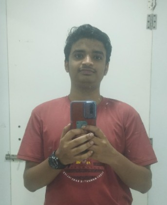

Who I Am
Hey, I'm Giridharan! I'm a web developer who's genuinely passionate about creating awesome web experiences. I started my coding journey during covid time, and I was amazed by programming. Every project is an opportunity to learn something new and push myself a bit further.So that's how I studied for JEE and qualified JEE mains but couldn't get CSE in any nit or iiits so I came to VIT vellore which offered me what I wanted i.e. BTECH CSE Core
What I Can Do
- HTML5 - Building solid, semantic web structures
- CSS3 - Making things look beautiful and responsive
- JavaScript - Adding interactivity and making sites feel alive
- Responsive Design - Creating sites that work everywhere - phones, tablets, desktops
When I'm Not Coding
I'm a big fan of photography and travel. There's something magical about exploring new places, meeting different people, and capturing moments that tell stories. I love how photography and web design both require attention to detail and an eye for what looks good. My hobbies actually inspire a lot of what I do with design - composition, color, and user experience.